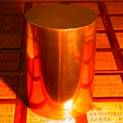
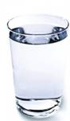
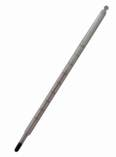
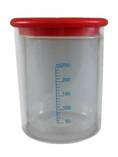

Тема сегодняшнего занятия посвящена тому, каким образом можно определить удельную теплоемкость вещества опытным путем, т. е. на практике. Конкретно, мы рассмотрим определение теплоемкости на примере твердого тела – металлического (латунного) цилиндра.
Цель работы:определить удельную теплоемкость металлического цилиндра.
Объект исследования:латунный цилиндр, подвешенный на нити.
Приборы и материалы:металлический цилиндр на нити (рис. 1), стакан с горячей и стакан с холодной водой (рис. 2), два термометра (рис. 3), весы (рис. 4), калориметр (рис. 5).
Рис. 1. Металлический цилиндр
Рис. 2. Стакан с водой
Рис. 3. Термометр
Рис. 4. Весы
Рис. 5. Калориметр
Ход работы:
Обработка данных и вычисление результата:
Измеренная установившаяся конечная температура в калориметре и остальные данные позволят нам рассчитать удельную теплоемкость металла, из которого изготовлен цилиндр. Вычислять искомую величину мы будем исходя из того, что, остывая, цилиндр отдает ровно такое же количество теплоты, что и получает вода при нагревании, происходит так называемый теплообмен.
Соответственно получаем следующие уравнения. Для нагрева воды количество теплоты:
\( Q_1 = c_1 m_1 (t-t_1) \), где:
\( c_1 \) - удельная теплоемкость воды (табличная величина);
\( m_1 \) - масса воды, которую можно определить с помощью весов, кг;
\( t \) - конечная температура воды и цилиндра, измеренная с помощью термометра, \( ^\circ C \)
\( t_1 \) - начальная температура холодной воды, измеренная с помощью термометра, \( ^\circ C \).
Для остывания металлического цилиндра количество теплоты:
\( Q_2 = c_2 m_2 (t_2 - t) \), где:
\( c_2 \) - удельная теплоемкость металла, из которого изготовлен цилиндр (искомая величина);
\( m_1 \) - масса цилиндра, которую можно определить с помощью весов, кг;
\( t_2 \) - температура горячей воды и, соответственно, начальная температура цилиндра, измеренная с помощью термометра, \( ^\circ C \);
конечная температура воды и цилиндра, измеренная с помощью термометра, \( ^\circ C \).
Замечание. В обеих формулах мы вычитаем из большей температуры меньшую для определения положительного значения количества теплоты.
Как было указано ранее, из-за процесса теплообмена между холодной водой и металлическим цилиндром их количества теплоты равны:
\( Q_1 = Q_2 \Rightarrow c_1 m_1 (t-t_1) = c_2 m_2 (t_2 - t) \) .
Следовательно, удельная теплоемкость материала цилиндра:
\( c_2 = \frac{c_1 m_1 (t-t_1)}{m_2(t_2 - t)} \)
Полученные результаты в любой лабораторной работе удобно записывать в таблицу, причем, проводить для получения усредненного максимально точно приближенного результата несколько измерений и вычислений. В нашем случае таблица может выглядеть примерно следующим образом:
| Масса воды в калориметре | Начальная температура воды | Масса цилиндра | Начальная температура цилиндра | Конечная температура |
|---|---|---|---|---|
| \( m_1 \), кг | \( t_1, ^\circ C \) | \( m_2 \), кг | \( t_2, ^\circ C \) | \( t, ^\circ C \) |
Вывод:вычисленное значение удельной теплоемкости материала цилиндра \( c_2 = \left( \frac{J}{kg \cdot ^\circ C} \right) \)